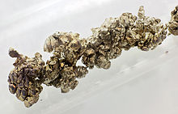

Strontium
|  | |||||||||||||||||||||||||||||||||||||||||||||||||||||||||||||||||||||||||||||||||||||||||||||||||||||||||||||||||||||||||||||||||||||||||||||||||||||||||||||||||||||||||||||||||||||||||||||||||||||||||||||||||||||||||||||||||||||
| General properties | |||||||||||||||||||||||||||||||||||||||||||||||||||||||||||||||||||||||||||||||||||||||||||||||||||||||||||||||||||||||||||||||||||||||||||||||||||||||||||||||||||||||||||||||||||||||||||||||||||||||||||||||||||||||||||||||||||||
|---|---|---|---|---|---|---|---|---|---|---|---|---|---|---|---|---|---|---|---|---|---|---|---|---|---|---|---|---|---|---|---|---|---|---|---|---|---|---|---|---|---|---|---|---|---|---|---|---|---|---|---|---|---|---|---|---|---|---|---|---|---|---|---|---|---|---|---|---|---|---|---|---|---|---|---|---|---|---|---|---|---|---|---|---|---|---|---|---|---|---|---|---|---|---|---|---|---|---|---|---|---|---|---|---|---|---|---|---|---|---|---|---|---|---|---|---|---|---|---|---|---|---|---|---|---|---|---|---|---|---|---|---|---|---|---|---|---|---|---|---|---|---|---|---|---|---|---|---|---|---|---|---|---|---|---|---|---|---|---|---|---|---|---|---|---|---|---|---|---|---|---|---|---|---|---|---|---|---|---|---|---|---|---|---|---|---|---|---|---|---|---|---|---|---|---|---|---|---|---|---|---|---|---|---|---|---|---|---|---|---|---|---|---|---|---|---|---|---|---|---|---|---|---|---|---|---|---|---|---|
| Name, symbol | strontium, Sr | ||||||||||||||||||||||||||||||||||||||||||||||||||||||||||||||||||||||||||||||||||||||||||||||||||||||||||||||||||||||||||||||||||||||||||||||||||||||||||||||||||||||||||||||||||||||||||||||||||||||||||||||||||||||||||||||||||||
| Pronunciation | /ˈstrɒnʃⁱəm/; /ˈstrɒntiəm/ STRON-sh(ee)-əm; STRON-tee-əm |
||||||||||||||||||||||||||||||||||||||||||||||||||||||||||||||||||||||||||||||||||||||||||||||||||||||||||||||||||||||||||||||||||||||||||||||||||||||||||||||||||||||||||||||||||||||||||||||||||||||||||||||||||||||||||||||||||||
| Appearance | silvery white metallic | ||||||||||||||||||||||||||||||||||||||||||||||||||||||||||||||||||||||||||||||||||||||||||||||||||||||||||||||||||||||||||||||||||||||||||||||||||||||||||||||||||||||||||||||||||||||||||||||||||||||||||||||||||||||||||||||||||||
| Strontium in the periodic table | |||||||||||||||||||||||||||||||||||||||||||||||||||||||||||||||||||||||||||||||||||||||||||||||||||||||||||||||||||||||||||||||||||||||||||||||||||||||||||||||||||||||||||||||||||||||||||||||||||||||||||||||||||||||||||||||||||||
|
|||||||||||||||||||||||||||||||||||||||||||||||||||||||||||||||||||||||||||||||||||||||||||||||||||||||||||||||||||||||||||||||||||||||||||||||||||||||||||||||||||||||||||||||||||||||||||||||||||||||||||||||||||||||||||||||||||||
| Atomic number | 38 | ||||||||||||||||||||||||||||||||||||||||||||||||||||||||||||||||||||||||||||||||||||||||||||||||||||||||||||||||||||||||||||||||||||||||||||||||||||||||||||||||||||||||||||||||||||||||||||||||||||||||||||||||||||||||||||||||||||
| Standard atomic weight (±) | 87.62(1)[1] | ||||||||||||||||||||||||||||||||||||||||||||||||||||||||||||||||||||||||||||||||||||||||||||||||||||||||||||||||||||||||||||||||||||||||||||||||||||||||||||||||||||||||||||||||||||||||||||||||||||||||||||||||||||||||||||||||||||
| Element category | alkaline earth metal | ||||||||||||||||||||||||||||||||||||||||||||||||||||||||||||||||||||||||||||||||||||||||||||||||||||||||||||||||||||||||||||||||||||||||||||||||||||||||||||||||||||||||||||||||||||||||||||||||||||||||||||||||||||||||||||||||||||
| Group, block | group 2 (alkaline earth metals), s-block | ||||||||||||||||||||||||||||||||||||||||||||||||||||||||||||||||||||||||||||||||||||||||||||||||||||||||||||||||||||||||||||||||||||||||||||||||||||||||||||||||||||||||||||||||||||||||||||||||||||||||||||||||||||||||||||||||||||
| Period | period 5 | ||||||||||||||||||||||||||||||||||||||||||||||||||||||||||||||||||||||||||||||||||||||||||||||||||||||||||||||||||||||||||||||||||||||||||||||||||||||||||||||||||||||||||||||||||||||||||||||||||||||||||||||||||||||||||||||||||||
| Electron configuration | [Kr] 5s2 | ||||||||||||||||||||||||||||||||||||||||||||||||||||||||||||||||||||||||||||||||||||||||||||||||||||||||||||||||||||||||||||||||||||||||||||||||||||||||||||||||||||||||||||||||||||||||||||||||||||||||||||||||||||||||||||||||||||
| per shell | 2, 8, 18, 8, 2 | ||||||||||||||||||||||||||||||||||||||||||||||||||||||||||||||||||||||||||||||||||||||||||||||||||||||||||||||||||||||||||||||||||||||||||||||||||||||||||||||||||||||||||||||||||||||||||||||||||||||||||||||||||||||||||||||||||||
| Physical properties | |||||||||||||||||||||||||||||||||||||||||||||||||||||||||||||||||||||||||||||||||||||||||||||||||||||||||||||||||||||||||||||||||||||||||||||||||||||||||||||||||||||||||||||||||||||||||||||||||||||||||||||||||||||||||||||||||||||
| Phase | solid | ||||||||||||||||||||||||||||||||||||||||||||||||||||||||||||||||||||||||||||||||||||||||||||||||||||||||||||||||||||||||||||||||||||||||||||||||||||||||||||||||||||||||||||||||||||||||||||||||||||||||||||||||||||||||||||||||||||
| Melting point | 1050 K (777 °C, 1431 °F) | ||||||||||||||||||||||||||||||||||||||||||||||||||||||||||||||||||||||||||||||||||||||||||||||||||||||||||||||||||||||||||||||||||||||||||||||||||||||||||||||||||||||||||||||||||||||||||||||||||||||||||||||||||||||||||||||||||||
| Boiling point | 1650 K (1377 °C, 2511 °F) | ||||||||||||||||||||||||||||||||||||||||||||||||||||||||||||||||||||||||||||||||||||||||||||||||||||||||||||||||||||||||||||||||||||||||||||||||||||||||||||||||||||||||||||||||||||||||||||||||||||||||||||||||||||||||||||||||||||
| Density near r.t. | 2.64 g·cm−3 | ||||||||||||||||||||||||||||||||||||||||||||||||||||||||||||||||||||||||||||||||||||||||||||||||||||||||||||||||||||||||||||||||||||||||||||||||||||||||||||||||||||||||||||||||||||||||||||||||||||||||||||||||||||||||||||||||||||
| when liquid, at m.p. | 2.375 g·cm−3 | ||||||||||||||||||||||||||||||||||||||||||||||||||||||||||||||||||||||||||||||||||||||||||||||||||||||||||||||||||||||||||||||||||||||||||||||||||||||||||||||||||||||||||||||||||||||||||||||||||||||||||||||||||||||||||||||||||||
| Heat of fusion | 7.43 kJ·mol−1 | ||||||||||||||||||||||||||||||||||||||||||||||||||||||||||||||||||||||||||||||||||||||||||||||||||||||||||||||||||||||||||||||||||||||||||||||||||||||||||||||||||||||||||||||||||||||||||||||||||||||||||||||||||||||||||||||||||||
| Heat of vaporization | 141 kJ·mol−1 | ||||||||||||||||||||||||||||||||||||||||||||||||||||||||||||||||||||||||||||||||||||||||||||||||||||||||||||||||||||||||||||||||||||||||||||||||||||||||||||||||||||||||||||||||||||||||||||||||||||||||||||||||||||||||||||||||||||
| Molar heat capacity | 26.4 J·mol−1·K−1 | ||||||||||||||||||||||||||||||||||||||||||||||||||||||||||||||||||||||||||||||||||||||||||||||||||||||||||||||||||||||||||||||||||||||||||||||||||||||||||||||||||||||||||||||||||||||||||||||||||||||||||||||||||||||||||||||||||||
vapor pressure
|
|||||||||||||||||||||||||||||||||||||||||||||||||||||||||||||||||||||||||||||||||||||||||||||||||||||||||||||||||||||||||||||||||||||||||||||||||||||||||||||||||||||||||||||||||||||||||||||||||||||||||||||||||||||||||||||||||||||
| Atomic properties | |||||||||||||||||||||||||||||||||||||||||||||||||||||||||||||||||||||||||||||||||||||||||||||||||||||||||||||||||||||||||||||||||||||||||||||||||||||||||||||||||||||||||||||||||||||||||||||||||||||||||||||||||||||||||||||||||||||
| Oxidation states | 2, 1[2] (a strongly basic oxide) | ||||||||||||||||||||||||||||||||||||||||||||||||||||||||||||||||||||||||||||||||||||||||||||||||||||||||||||||||||||||||||||||||||||||||||||||||||||||||||||||||||||||||||||||||||||||||||||||||||||||||||||||||||||||||||||||||||||
| Electronegativity | Pauling scale: 0.95 | ||||||||||||||||||||||||||||||||||||||||||||||||||||||||||||||||||||||||||||||||||||||||||||||||||||||||||||||||||||||||||||||||||||||||||||||||||||||||||||||||||||||||||||||||||||||||||||||||||||||||||||||||||||||||||||||||||||
| Ionization energies | 1st: 549.5 kJ·mol−1 2nd: 1064.2 kJ·mol−1 3rd: 4138 kJ·mol−1 |
||||||||||||||||||||||||||||||||||||||||||||||||||||||||||||||||||||||||||||||||||||||||||||||||||||||||||||||||||||||||||||||||||||||||||||||||||||||||||||||||||||||||||||||||||||||||||||||||||||||||||||||||||||||||||||||||||||
| Atomic radius | empirical: 215 pm | ||||||||||||||||||||||||||||||||||||||||||||||||||||||||||||||||||||||||||||||||||||||||||||||||||||||||||||||||||||||||||||||||||||||||||||||||||||||||||||||||||||||||||||||||||||||||||||||||||||||||||||||||||||||||||||||||||||
| Covalent radius | 195±10 pm | ||||||||||||||||||||||||||||||||||||||||||||||||||||||||||||||||||||||||||||||||||||||||||||||||||||||||||||||||||||||||||||||||||||||||||||||||||||||||||||||||||||||||||||||||||||||||||||||||||||||||||||||||||||||||||||||||||||
| Van der Waals radius | 249 pm | ||||||||||||||||||||||||||||||||||||||||||||||||||||||||||||||||||||||||||||||||||||||||||||||||||||||||||||||||||||||||||||||||||||||||||||||||||||||||||||||||||||||||||||||||||||||||||||||||||||||||||||||||||||||||||||||||||||
| Miscellanea | |||||||||||||||||||||||||||||||||||||||||||||||||||||||||||||||||||||||||||||||||||||||||||||||||||||||||||||||||||||||||||||||||||||||||||||||||||||||||||||||||||||||||||||||||||||||||||||||||||||||||||||||||||||||||||||||||||||
| Crystal structure | face-centered cubic (fcc)
 |
||||||||||||||||||||||||||||||||||||||||||||||||||||||||||||||||||||||||||||||||||||||||||||||||||||||||||||||||||||||||||||||||||||||||||||||||||||||||||||||||||||||||||||||||||||||||||||||||||||||||||||||||||||||||||||||||||||
| Thermal expansion | 22.5 µm·m−1·K−1 (at 25 °C) | ||||||||||||||||||||||||||||||||||||||||||||||||||||||||||||||||||||||||||||||||||||||||||||||||||||||||||||||||||||||||||||||||||||||||||||||||||||||||||||||||||||||||||||||||||||||||||||||||||||||||||||||||||||||||||||||||||||
| Thermal conductivity | 35.4 W·m−1·K−1 | ||||||||||||||||||||||||||||||||||||||||||||||||||||||||||||||||||||||||||||||||||||||||||||||||||||||||||||||||||||||||||||||||||||||||||||||||||||||||||||||||||||||||||||||||||||||||||||||||||||||||||||||||||||||||||||||||||||
| Electrical resistivity | 132 nΩ·m (at 20 °C) | ||||||||||||||||||||||||||||||||||||||||||||||||||||||||||||||||||||||||||||||||||||||||||||||||||||||||||||||||||||||||||||||||||||||||||||||||||||||||||||||||||||||||||||||||||||||||||||||||||||||||||||||||||||||||||||||||||||
| Magnetic ordering | paramagnetic | ||||||||||||||||||||||||||||||||||||||||||||||||||||||||||||||||||||||||||||||||||||||||||||||||||||||||||||||||||||||||||||||||||||||||||||||||||||||||||||||||||||||||||||||||||||||||||||||||||||||||||||||||||||||||||||||||||||
| Young's modulus | 15.7 GPa | ||||||||||||||||||||||||||||||||||||||||||||||||||||||||||||||||||||||||||||||||||||||||||||||||||||||||||||||||||||||||||||||||||||||||||||||||||||||||||||||||||||||||||||||||||||||||||||||||||||||||||||||||||||||||||||||||||||
| Shear modulus | 6.03 GPa | ||||||||||||||||||||||||||||||||||||||||||||||||||||||||||||||||||||||||||||||||||||||||||||||||||||||||||||||||||||||||||||||||||||||||||||||||||||||||||||||||||||||||||||||||||||||||||||||||||||||||||||||||||||||||||||||||||||
| Poisson ratio | 0.28 | ||||||||||||||||||||||||||||||||||||||||||||||||||||||||||||||||||||||||||||||||||||||||||||||||||||||||||||||||||||||||||||||||||||||||||||||||||||||||||||||||||||||||||||||||||||||||||||||||||||||||||||||||||||||||||||||||||||
| Mohs hardness | 1.5 | ||||||||||||||||||||||||||||||||||||||||||||||||||||||||||||||||||||||||||||||||||||||||||||||||||||||||||||||||||||||||||||||||||||||||||||||||||||||||||||||||||||||||||||||||||||||||||||||||||||||||||||||||||||||||||||||||||||
| CAS Registry Number | 7440-24-6 | ||||||||||||||||||||||||||||||||||||||||||||||||||||||||||||||||||||||||||||||||||||||||||||||||||||||||||||||||||||||||||||||||||||||||||||||||||||||||||||||||||||||||||||||||||||||||||||||||||||||||||||||||||||||||||||||||||||
| History | |||||||||||||||||||||||||||||||||||||||||||||||||||||||||||||||||||||||||||||||||||||||||||||||||||||||||||||||||||||||||||||||||||||||||||||||||||||||||||||||||||||||||||||||||||||||||||||||||||||||||||||||||||||||||||||||||||||
| Naming | after the mineral strontianite, itself named after Strontian, Scotland | ||||||||||||||||||||||||||||||||||||||||||||||||||||||||||||||||||||||||||||||||||||||||||||||||||||||||||||||||||||||||||||||||||||||||||||||||||||||||||||||||||||||||||||||||||||||||||||||||||||||||||||||||||||||||||||||||||||
| Discovery | William Cruickshank (1787) | ||||||||||||||||||||||||||||||||||||||||||||||||||||||||||||||||||||||||||||||||||||||||||||||||||||||||||||||||||||||||||||||||||||||||||||||||||||||||||||||||||||||||||||||||||||||||||||||||||||||||||||||||||||||||||||||||||||
| First isolation | Humphry Davy (1808) | ||||||||||||||||||||||||||||||||||||||||||||||||||||||||||||||||||||||||||||||||||||||||||||||||||||||||||||||||||||||||||||||||||||||||||||||||||||||||||||||||||||||||||||||||||||||||||||||||||||||||||||||||||||||||||||||||||||
| Most stable isotopes | |||||||||||||||||||||||||||||||||||||||||||||||||||||||||||||||||||||||||||||||||||||||||||||||||||||||||||||||||||||||||||||||||||||||||||||||||||||||||||||||||||||||||||||||||||||||||||||||||||||||||||||||||||||||||||||||||||||
|
|||||||||||||||||||||||||||||||||||||||||||||||||||||||||||||||||||||||||||||||||||||||||||||||||||||||||||||||||||||||||||||||||||||||||||||||||||||||||||||||||||||||||||||||||||||||||||||||||||||||||||||||||||||||||||||||||||||
| Decay modes in parentheses are predicted, but have not yet been observed | |||||||||||||||||||||||||||||||||||||||||||||||||||||||||||||||||||||||||||||||||||||||||||||||||||||||||||||||||||||||||||||||||||||||||||||||||||||||||||||||||||||||||||||||||||||||||||||||||||||||||||||||||||||||||||||||||||||
{kind=link}
Strontium (/ˈstrɒntiəm/ STRON-tee-əm) is a chemical element with symbol Sr and atomic number 38. An alkaline earth metal, strontium is a soft silver-white or yellowish metallic element that is highly reactive chemically. The metal turns yellow when it is exposed to air. Strontium has physical and chemical properties similar to those of its two neighbors calcium and barium. It occurs naturally in the minerals celestine, putnisite and strontianite. While natural strontium is stable, the synthetic 90Sr isotope is present in radioactive fallout and has a half-life of 28.90 years.
Both strontium and strontianite are named after Strontian, a village in Scotland near which the mineral was discovered in 1790 by Adair Crawford and William Cruickshank. The production of sugar from sugar beet was in the 19th century its largest application (see strontian process). Strontium compounds are today mostly used for the production of cathode ray tubes for televisions. The displacement of cathode ray tubes by other display methods in television sets is changing strontium's overall consumption.
Contents
[hide]Characteristics[edit]
{kind=link}
Strontium is a grey, silvery metal that is softer than calcium and even more reactive toward water, with which it reacts on contact to produce strontium hydroxide and hydrogen gas. It burns in air to produce both strontium oxide and strontium nitride, but since it does not react with nitrogen below 380 °C, at room temperature it will only form the oxide spontaneously.[3] Three allotropes of metallic strontium exist, with transition points at 235 and 540 °C.[4]
Because of its extreme reactivity with oxygen and water, this element occurs naturally only in compounds with other elements, such as in the minerals strontianite and celestite. It is kept under a liquid hydrocarbon such as mineral oil or kerosene to prevent oxidation; freshly exposed strontium metal rapidly turns a yellowish color with the formation of the oxide. Finely powdered strontium metal is pyrophoric meaning it will ignite spontaneously in air at room temperature. Volatile strontium salts impart a bright red color to flames, and these salts are used in pyrotechnics and in the production of flares. Natural strontium is a mixture of four stable isotopes.[3]
History[edit]
{kind=link}
Strontium is named after the Scottish village of Strontian (Gaelic Sron an t-Sithein), having been discovered in the ores taken from the lead mines there.[5] In 1790, Adair Crawford, a physician engaged in the preparation of barium, and his colleague William Cruickshank, recognised that the Strontian ores exhibited properties that differed from those normally seen in other "heavy spars" sources.[6] This allowed Adair to conclude on page 355 "... it is probable indeed, that the scotch mineral is a new species of earth which has not hitherto been sufficiently examined." The physician and mineral collector Friedrich Gabriel Sulzer analysed together with Johann Friedrich Blumenbach the mineral from Strontian and named it strontianite. He also came to the conclusion that it was distinct from the witherite and contained a new earth (neue Grunderde).[7] In 1793 Thomas Charles Hope, a professor of chemistry at the University of Glasgow proposed the name strontites.[8][9][10][11] He confirmed the earlier work of Crawford and recounted: " ... Considering it a peculiar earth I thought it necessary to give it an name. I have called it Strontites, from the place it was found; a mode of derivation in my opinion, fully as proper as any quality it may possess, which is the present fashion." The element was eventually isolated by Sir Humphry Davy in 1808 by the electrolysis of a mixture containing strontium chloride and mercuric oxide, and announced by him in a lecture to the Royal Society on 30 June 1808.[12] In keeping with the naming of the other alkaline earths, he changed the name to strontium.[13][14][15][16][17]
The first large-scale application of strontium was in the production of sugar from sugar beet. Although a crystallisation process using strontium hydroxide was patented by Augustin-Pierre Dubrunfaut in 1849[18] the large scale introduction came with the improvement of the process in the early 1870s. The German sugar industry used the process well into the 20th century. Prior to World War I the beet sugar industry used 100,000 to 150,000 tons of strontium hydroxide for this process per year.[19] The strontium hydroxide was recycled in the process, but the demand to substitute losses during production was high enough to create a significant demand initiating mining of strontianite in the Münsterland. The mining of strontianite in Germany ended when mining of the celestite deposits in Gloucestershire started.[20] These mines supplied most of the world strontium supply from 1884 to 1941.[21] Although the celestite deposits in the Granada basin were known for some time the large scale mining did not start before the 1950s.[22]
During atmospheric nuclear weapons testing it was observed that strontium-90 is one of the nuclear fission products with a relative high yield. The similarity to calcium and the chance that the strontium-90 might become enriched in bones made research on the metabolism of strontium an important topic.[23][24]
Occurrence[edit]
Strontium commonly occurs in nature, the 15th most abundant element on Earth, estimated to average approximately 360 parts per million in the Earth's crust[25] and is found chiefly as the form of the sulfate mineral celestite (SrSO4) and the carbonate strontianite (SrCO3). Of the two, celestite occurs much more frequently in sedimentary deposits of sufficient size to make development of mining facilities attractive. Because strontium is used most often in the carbonate form, strontianite would be the more useful of the two common minerals, but few deposits have been discovered that are suitable for development.[26]
In groundwater strontium behaves chemically much like calcium. At intermediate to acidic pH Sr2+ is the dominant strontium species. In the presence of calcium ions strontium commonly forms coprecipitates with calcium minerals such as calcite and anhydrite at an increased pH. At intermediate to acidic pH dissolved strontium is bound to soil particles by cation exchange.[27]
The mean strontium content of ocean water is 8 mg/l.[28][29] At a concentration between 82 and 90 µmol/l of strontium the concentration is considerable lower than the calcium concentration which is normally between 9.6 and 11.6 mmol/l.[30][31]
Production[edit]
According to the British Geological Survey, China was the top producer of strontium in 2007, with over two-thirds world share, followed by Spain, Mexico, Turkey, Argentina, and Iran.[32][33]
Large amounts of the mined celestite (SrSO4) are converted to the carbonate by two processes. Either the celestite is directly leached with sodium carbonate solution or the celestite is roasted with coal to form the sulfide. The second process results a dark coloured material containing mostly strontium sulfide. This so-called black ash is dissolved in water and filtered. Strontium carbonate is precipitated from the strontium sulfide solution by introduction of carbon dioxide.[34] The sulfate is reduced to the sulfide by the carbothermic reduction:
- SrSO4 + 2 C → SrS + 2 CO2
About 300,000 tons are processed in this way annually.[35]
The metal is produced commercially by reducing strontium oxide with aluminium. The strontium is distilled from the mixture.[35] Strontium metal can in principle be prepared by electrolysis of a solution of strontium chloride in molten potassium chloride:
- Sr2+ + 2 e− → Sr
- 2 Cl− → Cl2 + 2 e−
Isotopes[edit]
Strontium has four stable, naturally occurring isotopes: 84Sr (0.56%), 86Sr (9.86%), 87Sr (7.0%) and 88Sr (82.58%). Only 87Sr is radiogenic; it is produced by decay from the radioactive alkali metal 87Rb, which has a half-life of 4.88 × 1010 years. Thus, there are two sources of 87Sr in any material: first the portion formed in stars along with the isotopes 84Sr, 86Sr, and 88Sr; and second the portion formed by radioactive decay of 87Rb. The ratio 87Sr/86Sr is the parameter typically reported in geologic investigations; ratios in minerals and rocks have values ranging from about 0.7 to greater than 4.0. Because strontium has an atomic radius similar to that of calcium, it readily substitutes for Ca in minerals.
Sixteen unstable isotopes are known to exist. Of greatest importance are 90Sr with a half-life of 28.78 years and 89Sr with a half-life of 50.5 days. 90Sr is a by-product of nuclear fission found in nuclear fallout and presents a health problem since it substitutes for calcium in bone, preventing expulsion from the body. This isotope is one of the best long-lived high-energy beta emitters known, and is used in SNAP (Systems for Nuclear Auxiliary Power) devices. These devices hold promise for use in spacecraft, remote weather stations, navigational buoys, etc., where a lightweight, long-lived, nuclear-electric power source is required. The 1986 Chernobyl nuclear accident contaminated a vast area with 90Sr. 90Sr confined inside a concave silver plaque is also used for the medical treatment of a resected pterygium.[3]
89Sr is a short-lived artificial radioisotope that is used in the treatment of bone cancer. In circumstances where cancer patients have widespread and painful bony metastases (secondaries), the administration of 89Sr results in the delivery of radioactive emissions (beta particles in this case) directly to the area of bony problem (where calcium turnover is greatest). The 89Sr is manufactured as the chloride salt (which is soluble), and when dissolved in normal saline can be injected intravenously. Typically, cancer patients will be treated with a dose of 150 MBq. Patients must take precautions following this because their urine becomes contaminated with radioactivity, so they must sit to urinate and double-flush the toilet. The beta particles travel about 3.5 mm in bone (energy 0.583 MeV) and 6.5 mm in tissue, so there is no requirement to isolate patients having been treated, except to say they should not have any one (especially young children) sitting in their laps for 10–40 days.[citation needed] The variation in time results from the variable clearing time for 89Sr, which depends on renal function and the number of bony metastases. With a lot of bony metastases, the entire 89Sr dose can be taken up into bone and so the radioactivity is retained to decay over a 50.5-day half-life. It takes about 10 half-lives or about 500 days for 99.9% of the radioactive strontium to decay. However, where there are few bony metastases, the large proportion of 89Sr not taken up by the bone will be filtered by the kidney, so that the effective half-life (a combination of the physical and biological half-life) will be much shorter.
Applications[edit]
{kind=link}
Consuming 75% of production, the primary use for strontium is in glass for colour television cathode ray tubes.[35] It prevents X-ray emission.[36][37] All parts of the CRT must absorb X-rays. In the neck and the funnel of the tube, lead glass is used for this purpose, but this type of glass shows a browning effect due to the interaction of the X-rays with the glass. Therefore, the front panel has to use a different glass mixture, in which strontium and barium are the X-ray-absorbing materials. The average values for the glass mixture determined for a recycling study in 2005 is 8.5% strontium oxide and 10% barium oxide.[38] The amount of strontium used for the production of cathode ray tube is declining because the CRTs are replaced by other display methods. This decline has a significant influence on the mining and refining of strontium.[26]
Because strontium is so similar to calcium, it is incorporated in the bone. All four stable isotopes are incorporated, in roughly similar proportions, as they are found in nature. However, the actual distribution of the isotopes tends to vary greatly from one geographical location to another. Thus, analyzing the bone of an individual can help determine the region it came from. This approach helps to identify the ancient migration patterns as well as the origin of commingled human remains in battlefield burial sites. Strontium, thus, helps forensic scientists too.
87Sr/86Sr ratios are commonly used to determine the likely provenance areas of sediment in natural systems, especially in marine and fluvial environments. Dasch (1969) showed that surface sediments of Atlantic displayed 87Sr/86Sr ratios that could be regarded as bulk averages of the 87Sr/86Sr ratios of geological terranes from adjacent landmasses.[39] A good example of a fluvial-marine system to which Sr isotope provenance studies have been successfully employed is the River Nile-Mediterranean system,[40] Due to the differing ages of the rocks that constitute the majority of the Blue and White Nile, catchment areas of the changing provenance of sediment reaching the River Nile delta and East Mediterranean Sea can be discerned through Sr isotopic studies. Such changes are climatically controlled in the Late Quaternary.
More recently, 87Sr/86Sr ratios have also been used to determine the source of ancient archaeological materials such as timbers and corn in Chaco Canyon, New Mexico.[41][42] 87Sr/86Sr ratios in teeth may also be used to track animal migrations[43][44] or in criminal forensics.
Pyrotechnics[edit]
{kind=link}
Strontium carbonate and other strontium salts can be added to fireworks to give a deep red colour.[45] This is the same effect that is used to identify strontium cations using the flame test. This application consumes about 5% of the world's production.[35]
Uses for radioactive strontium[edit]
89Sr is the active ingredient in Metastron (the generic version of Metastron, Generic Strontium Chloride Sr-89 Injection, its manufactured by Bio-Nucleonics Inc.[46]), a radiopharmaceutical used for bone pain secondary to metastatic bone cancer. The strontium acts like calcium and is preferentially incorporated into bone at sites of increased osteogenesis. This localization focuses the radiation exposure on the cancerous lesion.
{kind=link}
90Sr has been used as a power source for radioisotope thermoelectric generators (RTGs). 90Sr produces approximately 0.93 watts of heat per gram (it is lower for the form of 90Sr used in RTGs, which is strontium fluoride).[47] However, 90Sr has a lifetime approximately 3 times shorter and has a lower density than 238Pu, another RTG fuel. The main advantage of 90Sr is that it is cheaper than 238Pu and is found in nuclear waste. The Soviet Union deployed nearly 1000 of these RTGs on its northern coast as a power source for lighthouses and meteorology stations.[48]
90Sr is also used in cancer therapy. Its beta emission and long half-life is ideal for superficial radiotherapy.
Niche applications[edit]
Strontium chloride is sometimes used in toothpastes for sensitive teeth. One popular brand includes 10% total strontium chloride hexahydrate by weight.[49]
Small amounts are used in the refining of zinc, to remove small amounts of lead impurities.[3]
Research trends[edit]
Other possible applications follow:
- Strontium titanate has an extremely high refractive index and an optical dispersion greater than that of diamond, making it useful in a variety of optics applications. This quality has also led to its being cut into gemstones, in particular as a diamond simulant. However, it is very soft and easily scratches so it is rarely used.[3]
- Ferrite magnets.
- Strontium aluminate is used as a bright phosphor with long persistence of phosphorescence.
- Strontium oxide is sometimes used to improve the quality of some pottery glazes.
- Strontium ranelate is used in the treatment of osteoporosis. It is a prescription drug in the EU, but not in the USA.
- Strontium barium niobate can be used as a photographic material for holograms.[50]
Strontium metal is used in strontium 90%-aluminium 10% alloys of an eutectic composition for the modification of aluminium-silicon casting alloys.[51][52] AJ62, a durable, creep-resistant magnesium alloy used in car and motorcycle engines by BMW, contains 2% strontium by weight.[53]
Strontium is used in scientific studies of neurotransmitter release in neurons. Like calcium, strontium facilitates synaptic vesicle fusion with the synaptic membrane. But, unlike calcium, strontium causes asynchronous vesicle fusion. Therefore, replacing calcium in a culture medium with strontium allows scientists to measure the effects of a single-vesicle fusion event, e.g., the size of the postsynaptic response elicited by the neurotransmitter content of a single vesicle.[54][55]
The important concept for isotopic tracing is that Sr derived from any mineral through weathering reactions will have the same 87Sr/86Sr as the mineral. Therefore, differences in 87Sr/86Sr among ground waters require either (a) differences in mineralogy along contrasting flowpaths or (b) differences in the relative amounts of Sr weathered from the same suite of minerals. This latter situation can arise in several ways. First, differences in initial water chemistry within a homogeneous rock unit will affect the relative weathering rates of the minerals. For example, sections of the soil zone affected by evaporative concentration of recharge waters or by differences in pCO2 can be expected to have different 87Sr/86Sr. Secondly, differences in the relative mobilities of water at scales ranging from inter-grain pores to the catchment scale may also profoundly affect 87Sr/86Sr (Bullen et al., 1996). For example, the chemical composition and the resultant 87Sr/86Sr in immobile waters at a plagioclase-hornblende grain boundary versus a quartz-mica boundary will be different. Third, a difference in the relative "effective" surface areas of minerals in one portion of the rock unit will also cause differences in chemistry and isotopic composition; "poisoning" of reactive surfaces by organic coatings is an example of this kind of process. In a fundamental sense, because the waters in shallow systems are not in chemical equilibrium with the rocks, it is unrealistic to expect that waters along flowpaths within even a constant-mineralogy unit should have a constant 87Sr/86Sr. Instead, the waters moving along specific flowpaths slowly react with the rocks and gradually approach chemical equilibrium over long time-periods.[56]
Compounds[edit]
{kind=link}
Strontium forms a variety of salts, the properties of which are always intermediate between those of barium and calcium. The salts tend to be colourless. The sulfate and carbonate are poorly soluble, hence their occurrence as minerals. Most compounds are derived from the carbonate or the sulfide, which is obtained from the minerals. Typical for an alkaline earth derivative, the sulfide hydrolyzes readily:
- SrS + 2 H2O → Sr(OH)2 + H2S
Similar reactions are used in the production of commercially useful compounds, including the most useful strontium compound, strontium carbonate.[35]
- SrS + H2O + CO2 → SrCO3 + H2S
Strontium nitrate can also be prepared in this way.
Biological role[edit]
Acantharea, a relative large group of marine radiolarian protozoa, produce intricate mineral skeletons composed of strontium sulfate.[57] In biological systems calcium is substituted in a small extent by strontium.[58] In the human body most of the absorbed strontium is deposited in the bones. The ratio of strontium to calcium in human bones is between 1:1000 and 1:2000 roughly in the same range as in the blood serum.[59]
Effect on the human body[edit]
The human body absorbs strontium as if it were calcium. Due to the chemical similarity of the elements, the stable forms of strontium might not pose a significant health threat — in fact, the levels found naturally may actually be beneficial (see below) – but the radioactive 90Sr can lead to various bone disorders and diseases, including bone cancer. The strontium unit is used in measuring radioactivity from absorbed 90Sr.
A recent in-vitro study conducted the NY College of Dental Sciences using strontium on osteoblasts showed marked improvement on bone-building osteoblasts.[60]
The drug strontium ranelate, made by combining strontium with ranelic acid, was found to aid bone growth, increase bone density, and lessen vertebral, peripheral, and hip fractures.[61][62] Women receiving the drug showed a 12.7% increase in bone density. Women receiving a placebo had a 1.6% decrease. Half the increase in bone density (measured by X-ray densitometry) is attributed to the higher atomic weight of Sr compared with calcium, whereas the other half a true increase in bone mass. Strontium ranelate is registered as a prescription drug in Europe and many countries worldwide. It must be prescribed by a doctor, must be delivered by a pharmacist, and requires strict medical supervision.
There is a long history of medical research regarding strontium's benefits, beginning in the 1950s. Studies indicate a lack of undesirable side-effects.[63][64][65][66][67][68] Several other salts of strontium such as strontium citrate and strontium carbonate are available in the United States under the Dietary Supplements Health and Education Act of 1994, providing close to the recommended strontium content, about 680 milligrams per day, of strontium ranelate. Their long-term safety and efficacy have not been evaluated on humans in large-scale medical trials.[citation needed] However, some companies do manufacture strontium pills for increasing bone health.[69]
Strontium has been shown to inhibit sensory irritation when applied topically to the skin [70][71]
Topically applied, strontium has been shown to accelerate the recovery rate of the epidermal permeability barrier (skin barrier). “[…]epidermal permeability barrier functions as the first line of defense in human body’s defense system by inhibiting external irritation and blocking the invasion of microbes or pollutants or their absorption by human body.[…] Topical application of strontium chloride solution accelerated permeability barrier recovery rate, compared with vehicle-applied skin.”[72]
See also[edit]
References[edit]
- Jump up ^ Standard Atomic Weights 2013. Commission on Isotopic Abundances and Atomic Weights
- Jump up ^ Colarusso, P.; Guo, B.; Zhang, K.-Q.; Bernath, P.F. (1996). "High-Resolution Infrared Emission Spectrum of Strontium Monofluoride" (PDF). J. Molecular Spectroscopy 175: 158. Bibcode:1996JMoSp.175..158C. doi:10.1006/jmsp.1996.0019.
- ^ Jump up to: a b c d e C. R. Hammond The elements (p. 4–35) in Lide, D. R., ed. (2005). CRC Handbook of Chemistry and Physics (86th ed.). Boca Raton (FL): CRC Press. ISBN 0-8493-0486-5.
- Jump up ^ Ropp, Richard C (2012-12-31). Encyclopedia of the Alkaline Earth Compounds. p. 16. ISBN 9780444595539.
- Jump up ^ Murray, W. H. (1977). The Companion Guide to the West Highlands of Scotland. London: Collins. ISBN 0-00-211135-7.
- Jump up ^ Crawford, Adair (1790). "On the medicinal properties of the muriated barytes". Medical Communications 2: 301–359.
- Jump up ^ Sulzer, Friedrich Gabriel; Blumenbach, Johann Friedrich (1791). "Über den Strontianit, ein Schottisches Foßil, das ebenfalls eine neue Grunderde zu enthalten scheint". Bergmännisches Journal: 433–436.
- Jump up ^ Although Thomas C. Hope had investigated strontium ores since 1791, he research was published in: Hope, Thomas Charles (1798). "Account of a mineral from Strontian and of a particular species of earth which it contains". Transactions of the Royal Society of Edinburgh 4 (2): 3–39. doi:10.1017/S0080456800030726.
- Jump up ^ Murray, T. (1993). "Elemementary Scots: The Discovery of Strontium". Scottish Medical Journal 38 (6): 188–189. PMID 8146640.
- Jump up ^ "Thomas Charles Hope, MD, FRSE, FRS (1766-1844)". The University of Edinburgh.
- Jump up ^ Hope, Thomas Charles (1794). "Account of a mineral from Strontian and of a particular species of earth which it contains". Transactions of the Royal Society of Edinburgh 3 (2): 141–149. doi:10.1017/S0080456800020275.
- Jump up ^ Davy, H (1808). "Electro-chemical researches on the decomposition of the earths; with observations on the metals obtained from the alkaline earths, and on the amalgam procured from ammonia". Philosophical Transactions of the Royal Society of London 98: 333–370. doi:10.1098/rstl.1808.0023.
- Jump up ^ "Strontian gets set for anniversary". Lochaber News. 19 June 2008.
- Jump up ^ Weeks, Mary Elvira (1932). "The discovery of the elements: X. The alkaline earth metals and magnesium and cadmium". Journal of Chemical Education 9 (6): 1046–1057. Bibcode:1932JChEd...9.1046W. doi:10.1021/ed009p1046.
- Jump up ^ Partington, J.R. (1942). "The early history of strontium". Annals of Science 5 (2): 157. doi:10.1080/00033794200201411.
- Jump up ^ Partington, J.R. (1951). "The early history of strontium.—Part II". Annals of Science 7: 95. doi:10.1080/00033795100202211.
- Jump up ^ Many other early investigators examined strontium ore, among them: (1) Martin Heinrich Klaproth, "Chemische Versuche über die Strontianerde" (Chemical experiments on strontian ore), Crell's Annalen (September 1793) no. ii, pages 189-202 ; and "Nachtrag zu den Versuchen über die Strontianerde" (Addition to the Experiments on Strontian Ore), Crell's Annalen (February 1794) no. i, page 99 ; also (2) Kirwan, Richard (1794). "Experiments on a new earth found near Stronthian in Scotland". The Transactions of the Royal Irish Academy 5: 243–256.
- Jump up ^ Fachgruppe Geschichte Der Chemie, Gesellschaft Deutscher Chemiker (2005). Metalle in der Elektrochemie. pp. 158–162.
- Jump up ^ Heriot, T. H. P (2008). "strontium saccharate process". Manufacture of Sugar from the Cane and Beet. ISBN 978-1-4437-2504-0.
- Jump up ^ Börnchen, Martin. "Der Strontianitbergbau im Münsterland". Retrieved 2010-11-09.
- Jump up ^ "Strontium". doi:10.1002/0471238961.192018150809020.
- Jump up ^ Martin, Josèm; Ortega-Huertas, Miguel; Torres-Ruiz, Jose (1984). "Genesis and evolution of strontium deposits of the granada basin (Southeastern Spain): Evidence of diagenetic replacement of a stromatolite belt". Sedimentary Geology 39 (3–4): 281. Bibcode:1984SedG...39..281M. doi:10.1016/0037-0738(84)90055-1.
- Jump up ^ "Chain Fission Yields". iaea.org.
- Jump up ^ Nordin, BE (1968). "Strontium Comes of Age". British Medical Journal 1 (5591): 566. doi:10.1136/bmj.1.5591.566. PMC 1985251.
- Jump up ^ Turekian, K.K.; Wedepohl, K. H. (1961). "Distribution of the elements in some major units of the Earth's crust". Geological Society of America Bulletin 72 (2): 175–192. Bibcode:1961GSAB...72..175T. doi:10.1130/0016-7606(1961)72[175:DOTEIS]2.0.CO;2. ISSN 0016-7606.
- ^ Jump up to: a b Ober, Joyce A. "Mineral Commodity Summaries 2010: Strontium" (PDF). United States Geological Survey. Retrieved 2010-05-14.
- Jump up ^ Heuel-Fabianek, B. (2014). "Partition Coefficients (Kd) for the Modelling of Transport Processes of Radionuclides in Groundwater" (PDF). Berichte des Forschungszentrums Jülich 4375. ISSN 0944-2952.
- Jump up ^ Geological Survey Professional Paper. 1966. pp. 138–139.
- Jump up ^ Angino, Ernest E.; Billings, Gale K.; Andersen, Neil (1966). "Observed variations in the strontium concentration of sea water". Chemical Geology 1: 145. doi:10.1016/0009-2541(66)90013-1.
- Jump up ^ Sun, Y.; Sun, M.; Lee, T.; Nie, B. (2005). "Influence of seawater Sr content on coral Sr/Ca and Sr thermometry". Coral Reefs 24: 23. doi:10.1007/s00338-004-0467-x.
- Jump up ^ Kogel, Jessica Elzea; Trivedi, Nikhil C; Barker, James M (2006-03-05). "Industrial Minerals & Rocks: Commodities, Markets, and Uses". ISBN 9780873352338.
- Jump up ^ British Geological Survey (2009). World mineral production 2004–08. Keyworth, Nottingham: British Geological Survey. ISBN 978-0-85272-639-6. Retrieved 2009-04-06.
- Jump up ^ Pohl, Walter L (2011-05-03). Economic Geology: Principles and Practice. ISBN 9781444336627.
- Jump up ^ Kemal, Mevlüt; Arslan, V; Akar, A; Canbazoglu, M (1996). Production of SrCO3 by black ash process: Determination of reductive roasting parameters. p. 401. ISBN 9789054108290.
- ^ Jump up to: a b c d e J. Paul MacMillan, Jai Won Park, Rolf Gerstenberg, Heinz Wagner, Karl Köhler, Peter Wallbrecht "Strontium and Strontium Compounds" in Ullmann's Encyclopedia of Industrial Chemistry 2002, Wiley-VCH, Weinheim. doi:10.1002/14356007.a25_321.
- Jump up ^ "Cathode Ray Tube Glass-To-Glass Recycling" (PDF). ICF Incorporated, USEP Agency. Archived from the original (PDF) on 2008-12-19. Retrieved 2012-01-07.
- Jump up ^ Ober, Joyce A.; Polyak, Désirée E. "Mineral Yearbook 2007: Strontium" (PDF). United States Geological Survey. Retrieved 2008-10-14.
- Jump up ^ Méar, F.; Yot, P.; Cambon, M.; Ribes, M. (2006). "The characterization of waste cathode-ray tube glass". Waste management 26 (12): 1468–76. doi:10.1016/j.wasman.2005.11.017. ISSN 0956-053X. PMID 16427267.
- Jump up ^ Dasch, J. (1969). "Strontium isotopes in weathering profiles, deep-sea sediments, and sedimentary rocks". Geochimica et Cosmochimica Acta 33 (12): 1521–1552. Bibcode:1969GeCoA..33.1521D. doi:10.1016/0016-7037(69)90153-7.
- Jump up ^ Krom, M. D.; Cliff, R.; Eijsink, L.M.; Herut, B.; Chester, R (1999). "The characterisation of Saharan dusts and Nile particulate matter in surface sediments from the Levantine basin using Sr isotopes". Marine Geology 155 (3–4): 319–330. doi:10.1016/S0025-3227(98)00130-3.
- Jump up ^ Benson, L.; Cordell, L.; Vincent, K.; Taylor, H.; Stein, J.; Farmer, G. & Kiyoto, F. (2003). "Ancient maize from Chacoan great houses: where was it grown?". Proceedings of the National Academy of Sciences 100 (22): 13111–13115. Bibcode:2003PNAS..10013111B. doi:10.1073/pnas.2135068100. PMC 240753. PMID 14563925.
- Jump up ^ English NB; Betancourt JL; Dean JS; Quade J. (Oct 2001). "Strontium isotopes reveal distant sources of architectural timber in Chaco Canyon, New Mexico". Proc Natl Acad Sci USA 98 (21): 11891–6. Bibcode:2001PNAS...9811891E. doi:10.1073/pnas.211305498. ISSN 0027-8424. PMC 59738. PMID 11572943.
- Jump up ^ Barnett-Johnson, Rachel; Grimes, Churchill B.; Royer, Chantell F.; Donohoe, Christopher J. (2007). "Identifying the contribution of wild and hatchery Chinook salmon (Oncorhynchus tshawytscha) to the ocean fishery using otolith microstructure as natural tags". Canadian Journal of Fisheries and Aquatic Sciences 64 (12): 1683–1692. doi:10.1139/F07-129.
- Jump up ^ Porder, S.; Paytan, A. & E.A. Hadly (2003). "Mapping the origin of faunal assemblages using strontium isotopes". Paleobiology 29 (2): 197–204. doi:10.1666/0094-8373(2003)029<0197:MTOOFA>2.0.CO;2. ISSN 0094-8373.
- Jump up ^ "Chemistry of Firework Colors – How Fireworks Are Colored". Chemistry.about.com. 2012-04-10. Retrieved 2012-04-14.
- Jump up ^ "FDA ANDA Generic Drug Approvals". Food and Drug Administration.
- Jump up ^ "What are the fuels for radioisotope thermoelectric generators?".
- Jump up ^ Doyle, James (2008-06-30). Nuclear safeguards, security and nonproliferation: achieving security with technology and policy. p. 459. ISBN 978-0-7506-8673-0.
- Jump up ^ Ghom (2005-12-01). Textbook of Oral Medicine. p. 885. ISBN 9788180614316.
- Jump up ^ Ketchel, BP; Heid, CA; Wood, GL; Miller, MJ; Mott, AG; Anderson, RJ; Salamo, GJ (1999). "Three-dimensional color holographic display". Applied optics 38 (29): 6159–66. Bibcode:1999ApOpt..38.6159K. doi:10.1364/AO.38.006159. PMID 18324139.
- Jump up ^ Farahany, Saeed; A. Ourdjini; M.H. Idris; S.G. Shabestari (2013). "Evaluation of the effect of Bi, Sb, Sr and cooling condition on eutectic phases in an Al–Si–Cu alloy (ADC12) by in situ thermal analysis". Thermochimica Acta 559: 59. doi:10.1016/j.tca.2013.02.024.
- Jump up ^ "Aluminium – Silicon Alloys : Strontium Master Alloys for Fast Al-Si Alloy Modification from Metallurg Aluminium". AZo Journal of Materials Online. Retrieved 2008-10-14.
- Jump up ^ L'espérance, Gilles; Plamondon, Philippe; Kunst, Martin; Fischersworring-Bunk, Andreas (2010). "Characterization of intermetallics in Mg–Al–Sr AJ62 alloys". Intermetallics 18: 1–7. doi:10.1016/j.intermet.2009.05.017.
- Jump up ^ Miledi, R. (1966). "Strontium as a Substitute for Calcium in the Process of Transmitter Release at the Neuromuscular Junction". Nature 212 (5067): 1233–4. Bibcode:1966Natur.212.1233M. doi:10.1038/2121233a0. PMID 21090447.
- Jump up ^ Hagler, D.J. Jr.; Goda, Y. (2001). "Properties of synchronous and asynchronous release during pulse train depression in cultured hippocampal neurons". J. Neurophysiol. 85 (6): 2324–34. PMID 11387379.
- Jump up ^ Carol Kendall. "USGS – Isotope Tracers – Resources". Camnl.wr.usgs.gov. Retrieved 2012-04-14.
- Jump up ^ De Deckker, Patrick (2004). "On the celestite-secreting Acantharia and their effect on seawater strontium to calcium ratios". Hydrobiologia 517: 1. doi:10.1023/B:HYDR.0000027333.02017.50.
- Jump up ^ Pors Nielsen, S. (2004). "The biological role of strontium". Bone 35 (3): 583–8. doi:10.1016/j.bone.2004.04.026. PMID 15336592.
- Jump up ^ Cabrera, Walter E.; Schrooten, Iris; De Broe, Marc E.; d'Haese, Patrick C. (1999). "Strontium and Bone". Journal of Bone and Mineral Research 14 (5): 661–8. doi:10.1359/jbmr.1999.14.5.661. PMID 10320513.
- Jump up ^ "The Effects of Strontium Citrate on Osteoblast Proliferation and Differentiation". Retrieved 2009-07-07.
- Jump up ^ Meunier P. J.; Roux C.; Seeman E.; Ortolani, S; Badurski, JE; Spector, TD; Cannata, J; Balogh, A; Lemmel, EM; Pors-Nielsen, S; Rizzoli, R; Genant, H. K.; Reginster, J. Y. (Jan 2004). "The effects of strontium ranelate on the risk of vertebral fracture in women with postmenopausal osteoporosis". New England Journal of Medicine 350 (5): 459–468. doi:10.1056/NEJMoa022436. ISSN 0028-4793. PMID 14749454.
- Jump up ^ Reginster JY; Seeman E; De Vernejoul MC; Adami, S.; Compston, J.; Phenekos, C.; Devogelaer, J. P.; Diaz Curiel, M.; Sawicki, A.; Goemaere, S.; Sorensen, O. H.; Felsenberg, D.; Meunier, P. J. (May 2005). "Strontium ranelate reduces the risk of nonvertebral fractures in postmenopausal women with osteoporosis: treatment of peripheral osteoporosis (TROPOS) study". J Clin Metab. 90 (5): 2816–2822. doi:10.1210/jc.2004-1774. ISSN 0021-972X. PMID 15728210.
- Jump up ^ Mashiba, T; Hirano, T; Turner, CH; Forwood, MR; Johnston, CC; Burr, DB (2000). "Suppressed bone turnover by bisphosphonates increases microdamage accumulation and reduces some biomechanical properties in dog rib". Journal of Bone and Mineral Research 15 (4): 613–20. doi:10.1359/jbmr.2000.15.4.613. PMID 10780852.
- Jump up ^ Losee, FL; Adkins, BL (1969). "A study of the mineral environment of caries-resistant Navy recruits". Caries research 3 (1): 23–31. doi:10.1159/000259588. PMID 5268322.
- Jump up ^ Meunier, PJ; Roux, C; Seeman, E; Ortolani, S; Badurski, JE; Spector, TD; Cannata, J; Balogh, A; Lemmel, EM; Pors-Nielsen, Stig; Rizzoli, René; Genant, Harry K.; Reginster, Jean-Yves (2004). "The effects of strontium ranelate on the risk of vertebral fracture in women with postmenopausal osteoporosis". The New England Journal of Medicine 350 (5): 459–68. doi:10.1056/NEJMoa022436. PMID 14749454.
- Jump up ^ Marie, PJ; Hott, M; Modrowski, D; De Pollak, C; Guillemain, J; Deloffre, P; Tsouderos, Y (1993). "An uncoupling agent containing strontium prevents bone loss by depressing bone resorption and maintaining bone formation in estrogen-deficient rats". Journal of Bone and Mineral Research 8 (5): 607–15. doi:10.1002/jbmr.5650080512. PMID 8511988.
- Jump up ^ Reginster, JY; Deroisy, R; Dougados, M; Jupsin, I; Colette, J; Roux, C (2002). "Prevention of early postmenopausal bone loss by strontium ranelate: the randomized, two-year, double-masked, dose-ranging, placebo-controlled PREVOS trial". Osteoporosis international 13 (12): 925–31. doi:10.1007/s001980200129. PMID 12459934.
- Jump up ^ Marie, PJ; Ammann, P; Boivin, G; Rey, C (2001). "Mechanisms of action and therapeutic potential of strontium in bone". Calcified tissue international 69 (3): 121–9. doi:10.1007/s002230010055. PMID 11683526.
- Jump up ^ Gray, Theodore (2012) The Elements, Black Dog & Leventhal Publishers, ISBN 1579128955, p. 97
- Jump up ^ Hahn (1999). Strontium Is a Potent and Selective Inhibitor of Sensory Irritation. Dermatologic Surgery. p. 689. ISSN 1524-4725. PMID 10491058.
- Jump up ^ Hahn, G.S. (2001). Anti-irritants for Sensory Irritation. Handbook of Cosmetic Science and Technology. p. 285. ISBN 0-8247-0292-1.
- Jump up ^ Kim, Hyun Jeong; Kim, Min Jung; Jeong, Se Kyoo (2006). The Effects of Strontium Ions on Epidermal Permeability Barrier. The Korean Dermatological Association, Korean Journal of Dermatology 44 (11). p. 1309.
External links[edit]
- WebElements.com – Strontium
- Chemistry in its element podcast (MP3) from the Royal Society of Chemistry's Chemistry World: Strontium
- Strontium at The Periodic Table of Videos (University of Nottingham)
| [hide] Periodic table (Large cells) | |||||||||||||||||||||||||||||||||
|---|---|---|---|---|---|---|---|---|---|---|---|---|---|---|---|---|---|---|---|---|---|---|---|---|---|---|---|---|---|---|---|---|---|
| 1 | 2 | 3 | 4 | 5 | 6 | 7 | 8 | 9 | 10 | 11 | 12 | 13 | 14 | 15 | 16 | 17 | 18 | ||||||||||||||||
| 1 | H | He | |||||||||||||||||||||||||||||||
| 2 | Li | Be | B | C | N | O | F | Ne | |||||||||||||||||||||||||
| 3 | Na | Mg | Al | Si | P | S | Cl | Ar | |||||||||||||||||||||||||
| 4 | K | Ca | Sc | Ti | V | Cr | Mn | Fe | Co | Ni | Cu | Zn | Ga | Ge | As | Se | Br | Kr | |||||||||||||||
| 5 | Rb | Sr | Y | Zr | Nb | Mo | Tc | Ru | Rh | Pd | Ag | Cd | In | Sn | Sb | Te | I | Xe | |||||||||||||||
| 6 | Cs | Ba | La | Ce | Pr | Nd | Pm | Sm | Eu | Gd | Tb | Dy | Ho | Er | Tm | Yb | Lu | Hf | Ta | W | Re | Os | Ir | Pt | Au | Hg | Tl | Pb | Bi | Po | At | Rn | |
| 7 | Fr | Ra | Ac | Th | Pa | U | Np | Pu | Am | Cm | Bk | Cf | Es | Fm | Md | No | Lr | Rf | Db | Sg | Bh | Hs | Mt | Ds | Rg | Cn | 113 | Fl | 115 | Lv | 117 | 118 | |
|
|
|||||||||||||||||||||||||||||||||
|
||
|
||